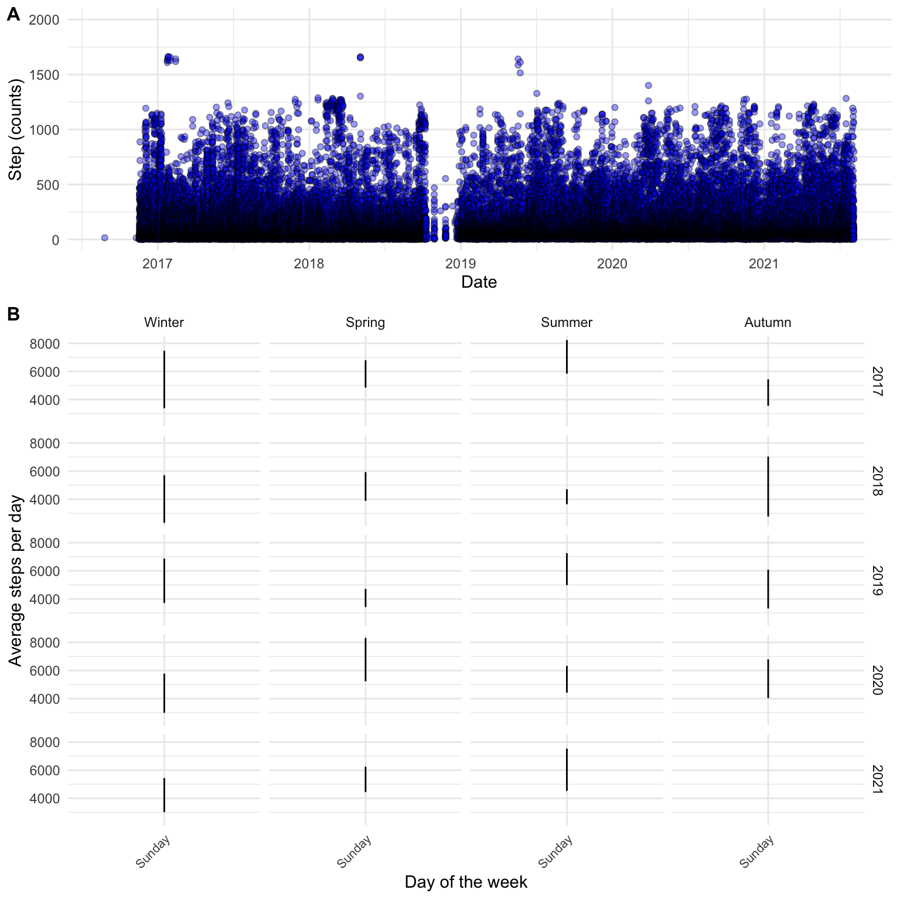

2 Introduction to data science
2.1 About data in the world of sport and exercise
Data are everywhere. Most of us walk around with a data collection device in our pockets all the time. This device (your mobile phone), records and store data about you all throughout the day. Such data are the basis of the quantified self movement1 that have grown in popularity as capabilities to record data from daily life has become better. People interested in quantifying their personal life does so for different reasons, but often with the intent to improve their health2.
Much of these kind of data are readily available to us due to the fact we are protected by data privacy policies and regarded as personal data3. With some effort you yourself can get your data out of your iphone to explore, for example, your daily step count. I discovered that my phone(s) has been collecting data for me since 2016 and I tend to walk less steps on Sundays compared to Saturdays (see Figure @ref(fig:iphone-data)).
Data are also collected and stored in publicly available databases. Such databases are created for the purpose to store specific types of data, such as soccer4 or biathlon results5, or biological information such as gene sequences6. Even data from scientific studies are now days often publicly available7 meaning that we can perform scientific studies on unique data sets without collecting the data ourselves.
The above examples shows that there are abundance of data around and available to us. The problem is that it is hard understand all this data. This is where data science and data literacy comes in. In the world of sport and exercise, regardless if you are interested in doing scientific investigations, coach a soccer-team or individual athletes or help patients recover from surgery using exercise therapy, you are faced with the problem of handling and make sense of data. Some of the key skills and deeper understanding about data science are very much transferable between such areas of practice.
Think about the literature! Spiegelhalter (The Art of Statistics, in the introduction chapter) talks about how statistics has evolved towards the broader field of data science. In data science, statistical theory and methods are just parts of the problem solving cycle. Try to think about how you would use the PPDAC cycle as a exercise coach and a scientist. What are the similarities and differences?
One broader aim of this course is for you to develop skills to better understand data.
2.2 Replication and Reproducibility
In scientific research, replication is a way to confirm scientific claims. When a result can be confirmed by an independent group of researchers, the claim is more likely to be true. Many results will however never be possible to replicate due to the size of trials, costs and urgency of the research question. A recent example could perhaps be the many vaccine trials performed to develop a vaccines against COVID-198. Other examples concern studies with unique study populations, such as large scale epidemiological studies (Peng, Dominici, and Zeger 2006), but the same could be said to be true for unique investigations in sport and exercise science.
When studies are not likely to be replicated, reproducibility of the analyses and results has been suggested to be a minimum standard for scientific studies. Reproducibility means that given the same datas, similar results or conclusions can be drawn by independent researchers (Peng, Dominici, and Zeger 2006).
Peng et al. (Peng, Dominici, and Zeger 2006) suggests that a fully reproducible study has
- Available data.
- Computer code (software) that produces the results of the study.
- Documentation that describes the software and data used in the study, and
- ways to share the data and code.
The above principally relates to the trust we can place in scientific results. However, the minimum standard of reproducibility has advantages also for the individual researcher (or master student)! When working with reproducible methods we will develop ways of documenting and automating our analyses. This will make it easier to collaborate with others. And, as it turns out, your most frequent collaborator is you, in the future!
A reproducible data analysis means that you will make it explicit and transparent. In a traditional data analysis, most activities are in the “black box”. In order to avoid bias (Ioannidis 2005), the “black box” needs to be opened and you need to actively make transparent decisions all along the analytic pipeline (Leek and Peng 2015). This pipeline preferably involves the whole problem solving cycle described by Spiegelhalter (Spiegelhalter 2019). However the tools that we will learn about in this course focuses primarily on the steps from the experimental design to presentation of statistical results (Leek and Peng 2015). These steps includes data collection (and storage), data cleaning, exploratory data analysis, statistical modelling and statistical inference (and communication) (Leek and Peng 2015).
2.3 Tools in data science
Ways to interpret and make sense of data involves different methods. These methods are now days often implemented in computer software. This means that when you as a practitioner (scientist, coach, analyst …) want to understand data, you have to master some kind of computer software. The most common software used to understand data is probably Microsoft’s Excel. You can do amazing stuff with Excel! In the world of sport and exercise Excel has been used in such diverse activities such as scientific investigations, planning and recording training for Olympic medalists9 and scheduling appointments.
For scientific research, most people use additional software to do statistical analyses. If you have spent time in higher education you have probably heard about SPSS, Stata or Jamovi. These are all specialized software used for statistical analyses.
The above mentioned tools can all be used as part of a fully reproducible workflow. However, there are software solutions that actually suits this requirement better than others. Going back to the description of reproducible science as made by Peng et al. (Peng, Dominici, and Zeger 2006), we want software where analyses can be
- Human- and computer-readable, meaning that we want to be able to write scripts, or computer programs that execute the analyses.
- Documented, meaning that along the code we want to be able to describe what the code does.
- Available and able to share with other, meaning that we analyses can be run on open and free software to maximize ability to share them.
This means that the software that we would prefer should be run using scripts (as opposed to point and click) and be free of charge (and open source, as opposed to expensive and proprietary). These criteria can be fulfilled when we use software that is written around the R language (although alternatives exists10).
R is a computer language that is especially well suited for reproducible data analysis. As users are able to contribute software extensions, also called packages, many specialized software implementation exists for different tasks, such as creating figures or analyses of specific data. Around R, people have been developing auxiliary software to enable reproducible data analysis. The negative part of all these opportunities is that using R requires some effort. The learning curve is steep!
Even though you might not use R ever again after this course, making and effort trying to learn it will let you know something about programming, capabilities of modern data science, statistical analysis and software/computers in general. These areas are all part of our modern society and are very much transferable regardless of what computer language we are talking about.
In a following chapter of these course notes we will go through installing and starting up R.
2.4 References
Ioannidis, John P. A. 2005. “Why Most Published Research Findings Are False.” Journal Article. PLOS Medicine 2 (8): e124. https://doi.org/10.1371/journal.pmed.0020124.
Leek, J. T., and R. D. Peng. 2015. “Statistics: P Values Are Just the Tip of the Iceberg.” Journal Article. Nature 520 (7549): 612. https://doi.org/10.1038/520612a.
Peng, R. D., F. Dominici, and S. L. Zeger. 2006. “Reproducible Epidemiologic Research.” Journal Article. Am J Epidemiol 163 (9): 783–89. https://doi.org/10.1093/aje/kwj093.
Spiegelhalter, D. J. 2019. The Art of Statistics : How to Learn from Data. Book. First US edition. New York: Basic Books.
Read more about the quantified self movement in this Wikipedia article↩︎
See this website for intriguing examples↩︎
See e.g. Apples Privacy Policy.↩︎
understat.com stores match specific data from major leagues. Data are available through software packages such as
worldfootballR↩︎biathlonresults.com/ hosts results from the international biathlon federation. An example of analyzed data can be seen here.↩︎
Ensembl and the National center for biotechnology information are commonly used databases in the biomedical sciences.↩︎
We published our raw data together with a recent paper (Mølmen et al 2021 doi: 10.1186/s12967-021-02969-1.) together with code to analyze it in a public repository.↩︎
https://www.evaluate.com/vantage/articles/news/snippets/its-official-covid-19-vaccine-trials-rank-among-largest↩︎
The amount of time used by different coaches to create their own specific coaching software really makes many of them amateur software engineers. See for example this training journal from swedish orienteering.↩︎
In addition to R, Python offers a free open source environment for reproducible analyses. The choice between the two are matter of taste.↩︎